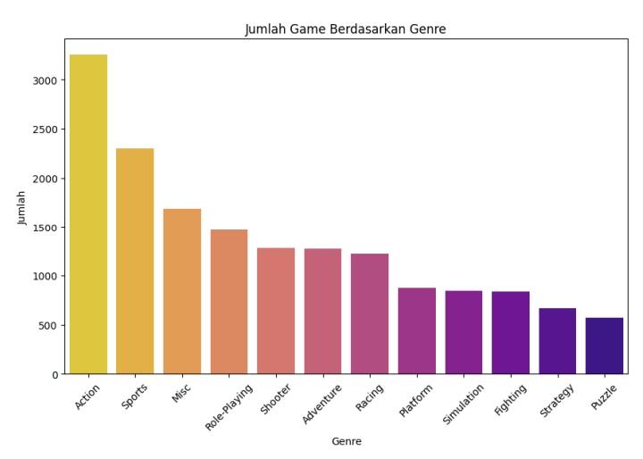
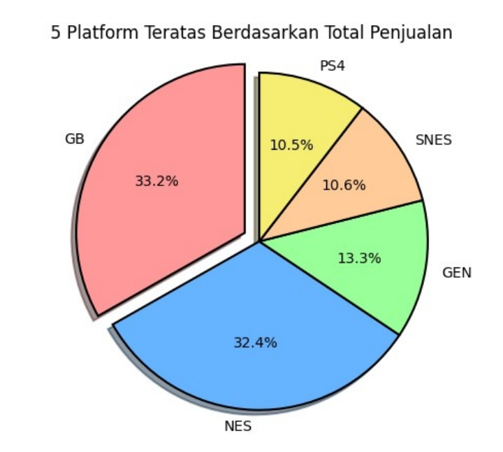
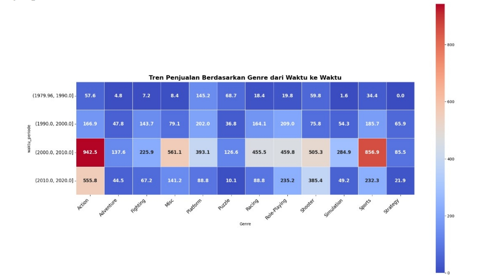
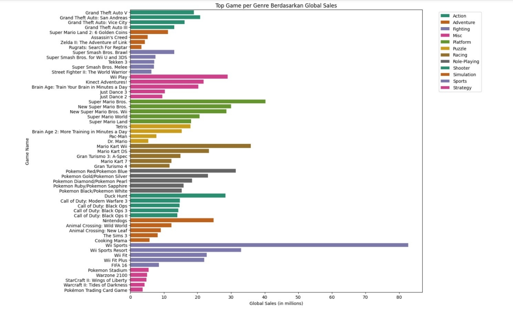
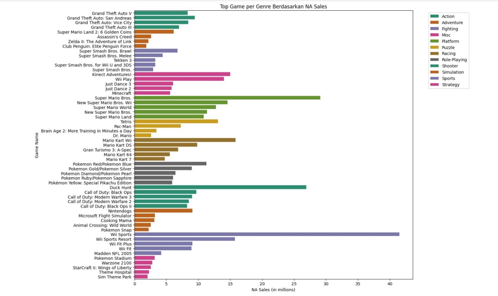
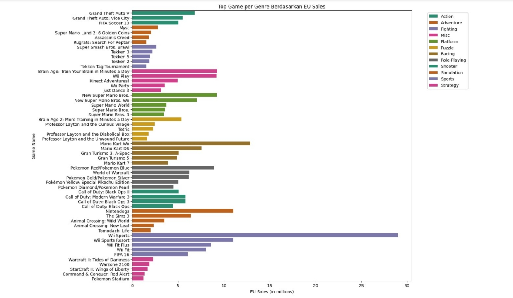
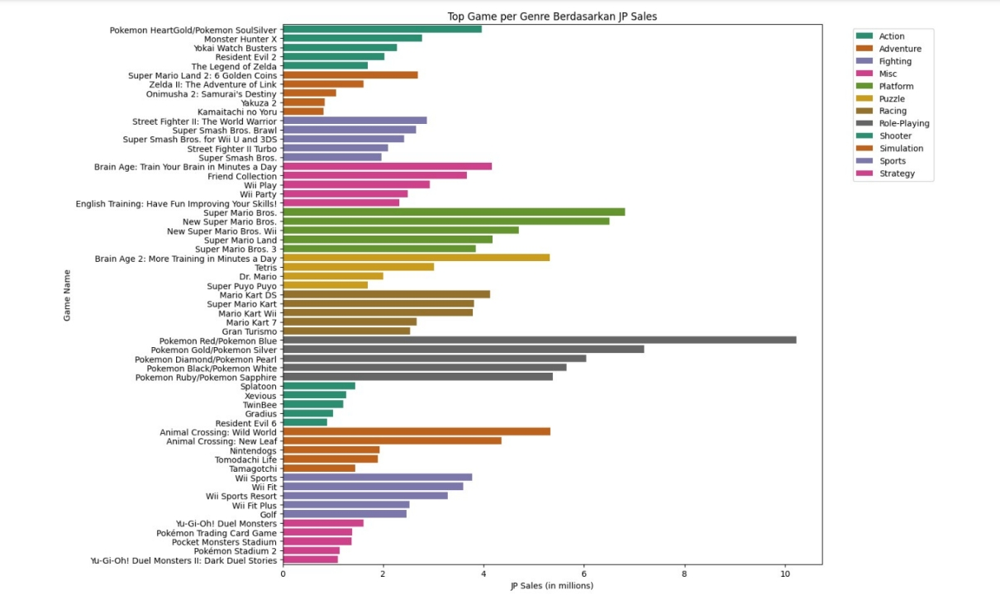
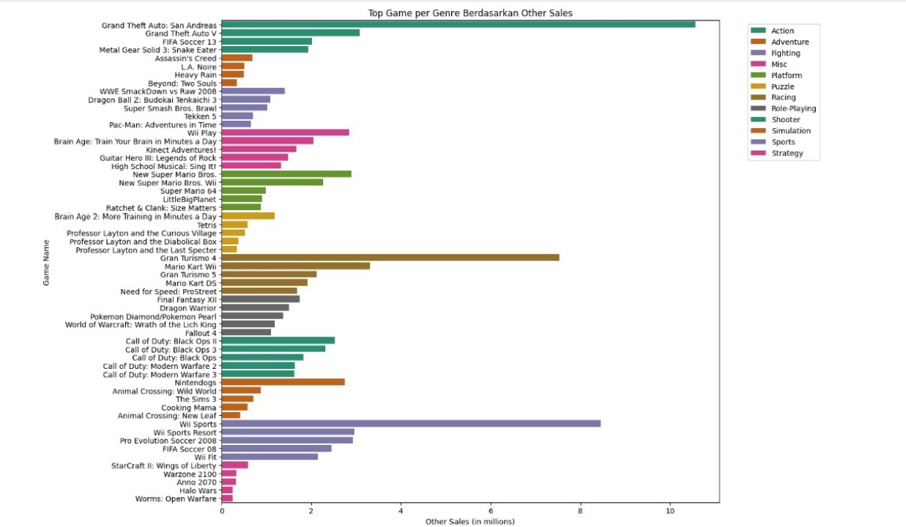

Project Overview
The video game industry has generated billions of dollars in revenue worldwide across multiple gaming platforms and regions. Understanding historical sales trends helps identify market opportunities, consumer preferences, and platform performance. This project performs Exploratory Data Analysis on the Video Game Sales dataset using Python — uncovering sales trends, best-selling platforms, genre popularity, and regional performance through statistical analysis and visualization.
Explore The Data Yourself
EDA is not about looking at charts — it's about asking questions. Pick a region, then see Top Games + Insight change. This is the same logic as the notebook, made interactive.
Global, NA, EU, JP, or Other. Each market has different taste.
See which titles dominate that region.
What does it mean for a publisher? That's data storytelling.
1. Which platform has highest global sales?
2. Which genres dominate?
3. How did sales change over time?
4. Which region contributes most?
5. Which games win in each market?
16,500+ records • 11 variables
Name, Platform, Year, Genre, Publisher, NA_Sales, EU_Sales, JP_Sales, Other_Sales, Global_Sales
| Rank | Game | Genre | Sales (M) |
|---|
The 4 Stories in This EDA
If you only read 4 things, read these.
1. Platform — Nintendo Wins
GameBoy (GB) achieved the highest total sales. Nintendo platforms dominate the market. Platform popularity strongly affects overall sales.
2. Genre — Action Dominates
Action is the most common genre in the dataset. Sports and Misc also have high counts. Puzzle and Strategy appear less frequently.
3. Trend — Peak 2008–2010
Sales increased rapidly in early 2000s, reached highest between 2008–2010, then gradually declined afterward.
4. Region — NA Leads, JP is Different
North America generated largest sales, Europe second. Japan showed different preferences — stronger for Role-Playing and Nintendo-exclusive titles.
Analysis Results & Visualizations
Real charts from the notebook. Click to zoom.
Number of Games by Genre

Top 5 Platforms by Global Sales

Sales Trend Over Time

Top Selling Games Worldwide

Top Games in North America

Top Games in Europe

Top Games in Japan

Top Games in Other Regions

Data Analysis Workflow
How it was done.
1. Business Understanding
2. Data Collection
3. Data Cleaning — Missing values, data type conversion
4. Exploratory Data Analysis — Descriptive stats, platform / genre / trend / regional
5. Data Visualization — Matplotlib + Seaborn
6. Business Insights
Key Findings
Takeaways.
GameBoy (GB) recorded highest platform sales
Action is most common genre
Industry peaked 2008–2010
North America contributed largest share
Wii Sports remains highest-selling game worldwide
Repository & Files
Source files.
video-game-sales-analysis/
├── README.md
├── vgsales.ipynb
├── vgsales.csv
└── images/
├── genre_distribution.jpg
├── platform_sales.jpg
├── sales_trend.jpg
├── global_top_games.jpg
├── na_top_games.jpg
├── eu_top_games.jpg
├── jp_top_games.jpg
└── other_top_games.jpgFuture Improvements
Next steps.
ML model to predict future game sales
Interactive dashboard in Power BI / Looker Studio
Publisher performance analysis
Time series forecasting
Customer segmentation by gaming preferences
Skills Demonstrated
What this project proves.
Exploratory Data Analysis • Data Cleaning • Data Wrangling • Data Visualization • Statistical Analysis • Business Understanding • Data Storytelling • Python • Pandas • NumPy • Matplotlib • Seaborn